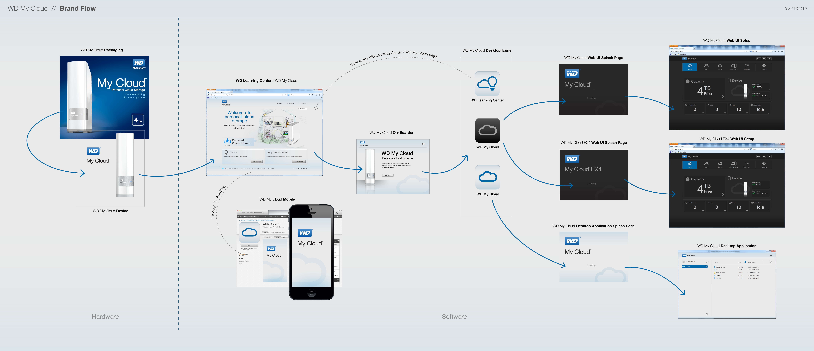
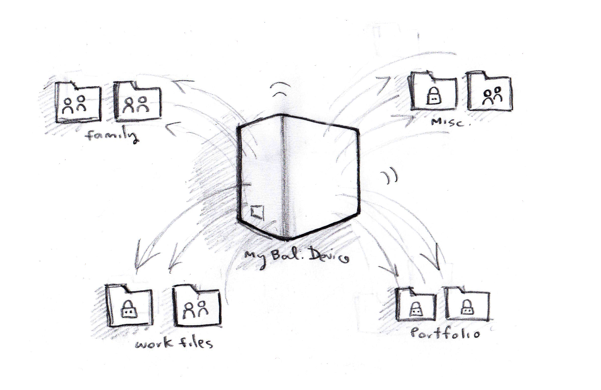
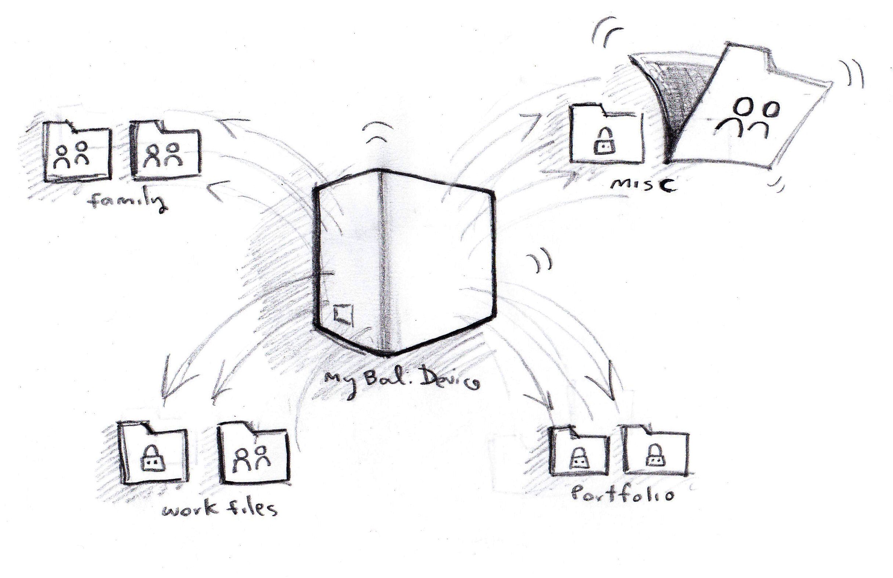

Role
UX / Interaction Designer
Employer
Western Digital
Product
MyCloud Desktop Experience
Scope
Information Architecture + Widget UX
Output
Filed Patent (US 20150095776)
Stage
Concept, Prototype, Patent Filing
MyCloud is a personal NAS drive (network-attached storage) for home users who upload, store, and access media and files from a dedicated device. The core product story here was the desktop widget itself: a lightweight MyCloud surface that lets users quickly drag files into their NAS for upload, then access and play media directly from the same widget context.
The interaction model had to feel immediate and familiar, like a native desktop utility, while still communicating storage and sharing behavior tied to a personal cloud device.
Visually, the widget was intentionally designed to look and feel like the MyCloud product language, while introducing moments of fun and humor in upload and playback interactions to make the experience more human.
The broader flow work connected setup, onboarding, launch moments, and ongoing widget actions into one coherent model users could understand without technical training.
This blueprint gives visitors the system context immediately after the core product story: what the MyCloud ecosystem includes, and how users move from hardware and onboarding to software entry and daily file interaction.
It maps packaging, learning center onboarding, desktop iconography, splash transitions, and application entry states into one E2E narrative.

Exploration and stakeholder review surfaced recurring friction around comprehension, confidence, and continuity across device and software entry points.
Users understood local folders, not distributed storage behaviors. The interaction needed to make ownership, destination, and folder intent visible at a glance.
Private versus shared behavior often lived in secondary settings. The proposed model surfaced lock/share state in context so actions felt safe and reversible.
Packaging, onboarding, web splash states, and desktop application moments lacked a unified language. The solution required a single E2E interaction storyline.
Initial ideation focused on category grouping, lock/share semantics, and directional movement around the device as the primary organizing anchor.


This artifact is a legacy Flash file and must be opened with a standalone Flash Player projector app (outside the browser).
Use the link below to open the source SWF. If Flash Player Projector is installed and associated with SWF files, your system can launch it directly.
Browser security blocks legacy Flash plugin execution. For true Flash playback, open the SWF in Adobe Flash Player 32 Projector or equivalent standalone runtime.
This design effort translated exploratory interaction design into a defensible intellectual property narrative: problem framing, interaction model, flow logic, and visual artifacts aligned to patent language.
The attached patent PDF includes the formal claims and reference figures connected to this MyCloud widget interaction approach, closing the E2E story from concept to filed documentation.
PATENT PDF